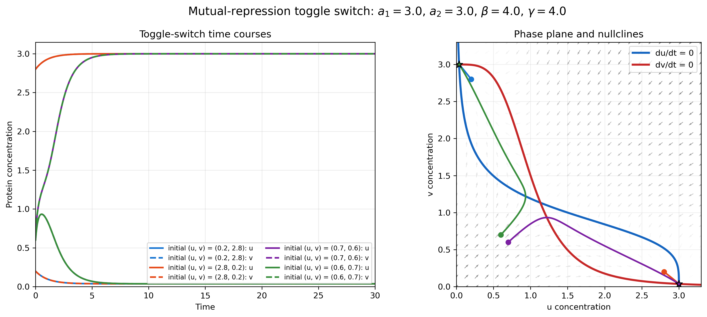
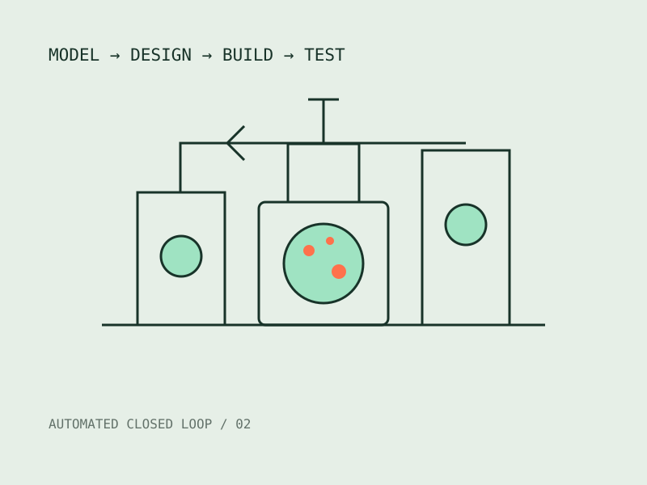
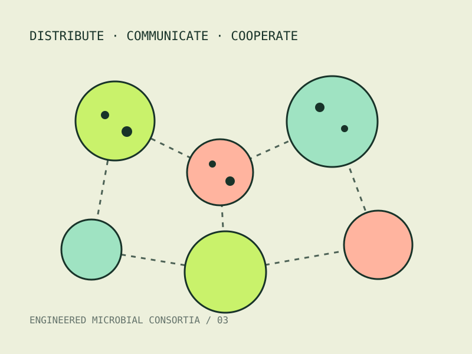
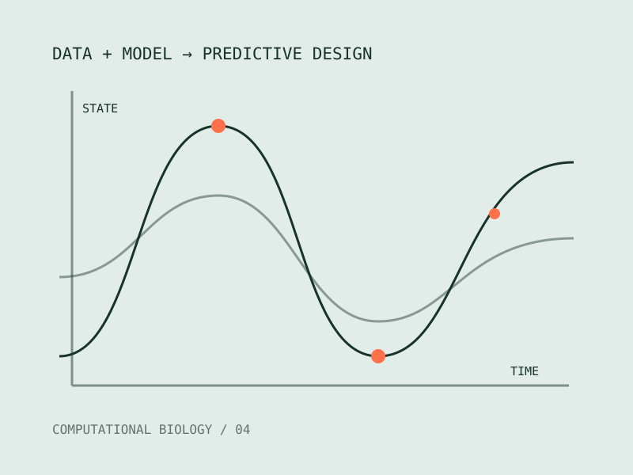

VIEW FIGURE ↗可预测的基因线路设计
我们开发模型指导的设计方法，构建具有开关、记忆、逻辑和反馈能力的合成基因线路。通过系统辨识、动力学建模与高通量实验的闭环迭代，我们希望让线路行为在不同细胞环境中依然保持稳定和可预测。
查看模型与代码 ↗ CHENYE LabInstitute of Synthetic Biology
CHENYE LabInstitute of Synthetic Biology
WHAT WE DO / 研究方向
We combine quantitative models, automated experiments, and synthetic biology to make biological systems precise, predictable, and programmable.

VIEW FIGURE ↗我们开发模型指导的设计方法，构建具有开关、记忆、逻辑和反馈能力的合成基因线路。通过系统辨识、动力学建模与高通量实验的闭环迭代，我们希望让线路行为在不同细胞环境中依然保持稳定和可预测。
查看模型与代码 ↗
我们将机器人实验、定量表征与计算模型连接成自动化闭环，使平台能够根据实验结果更新预测并规划下一轮设计。这种方法可以加速基因元件优化，降低经验试错成本，并实现大规模、可重复的生物系统工程。
了解项目 ↗
单个细胞难以完成的复杂任务，可以由分工协作的微生物群落实现。我们研究群落中的信息交换、资源竞争和稳定性，并将功能模块分配到不同细胞中，建立可控制、可扩展的多细胞工程系统。
了解项目 ↗